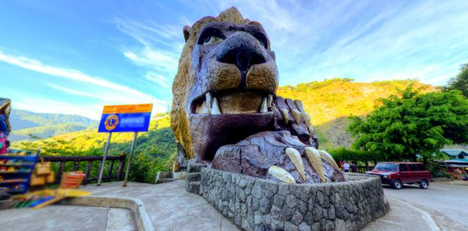
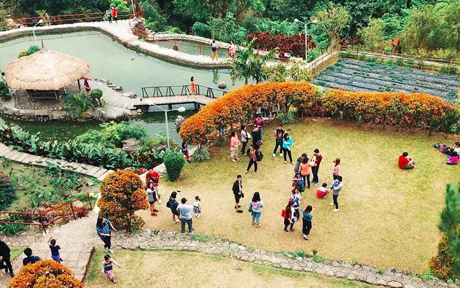
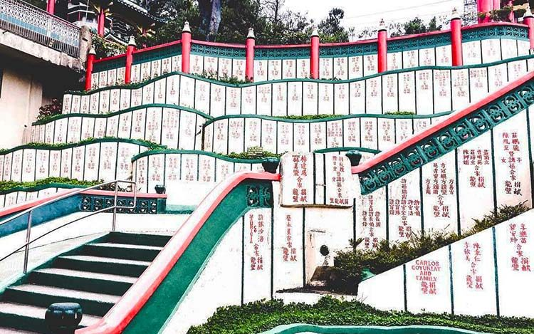
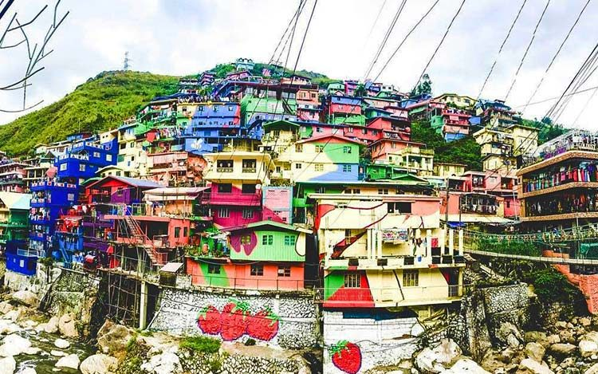
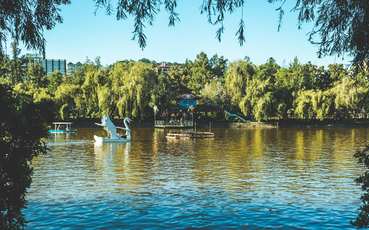
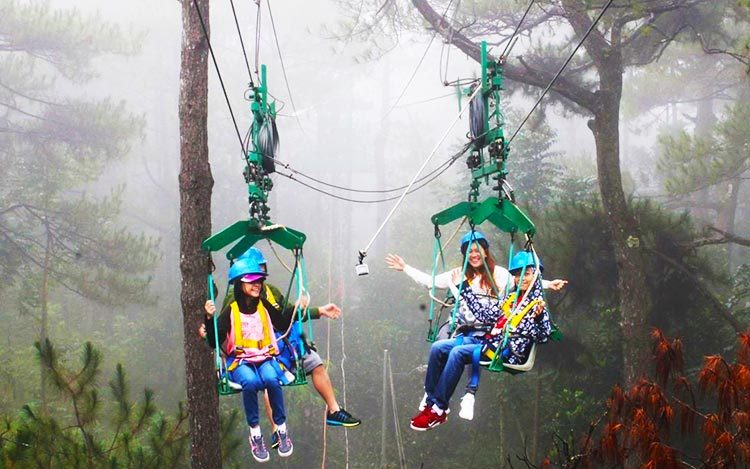
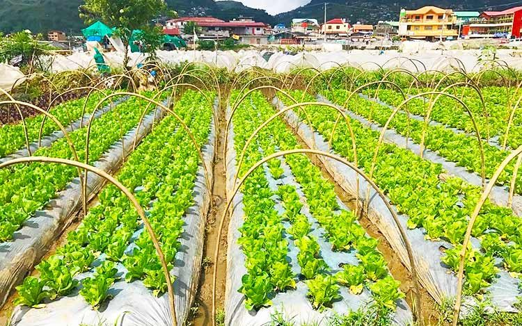
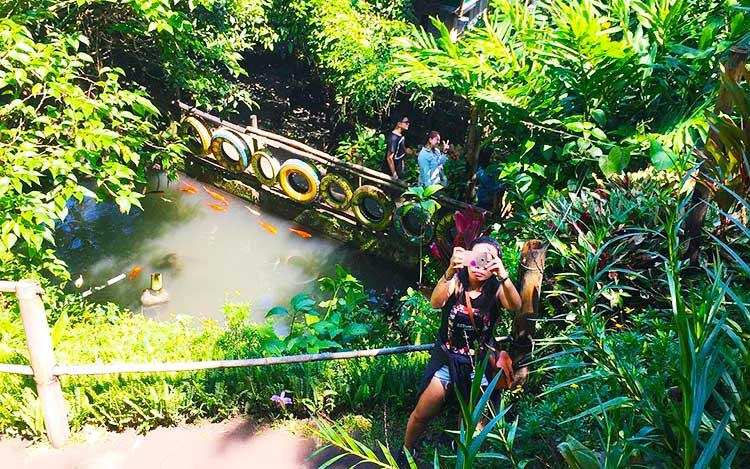
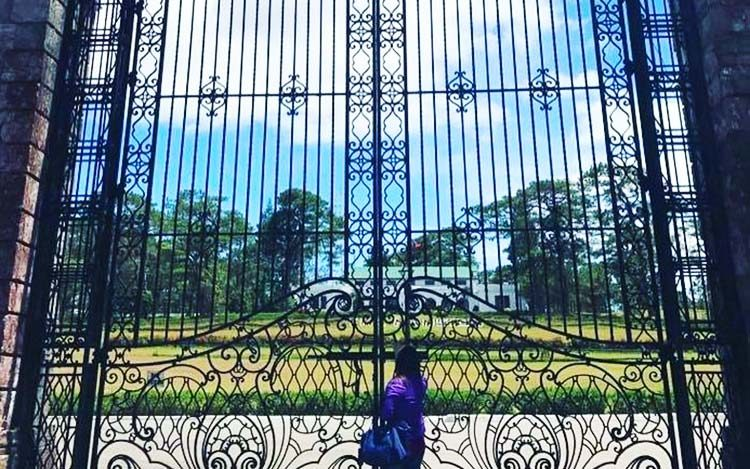
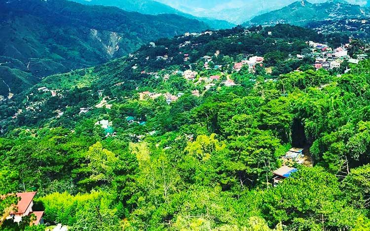

Top 10 Tourist Spot in Baguio

1.Bencab Museum

“BenCab” is short for Ben Cabrera, a National Artist who now resides and works in Baguio City. Aside from all the paintings, sculptures, and installations that can both rattle and inspire you. The artist himself shows up from time to time and you can have a photo taken with him or strike a conversation if you’re brave enough.
The museum also houses Cafe Sabel, a memorabilia shop, and a garden where you can see typical indigenous Ifugao, Kalinga, and Bontoc architecture and farm produce.
The museum also houses Cafe Sabel, a memorabilia shop, and a garden where you can see typical indigenous Ifugao, Kalinga, and Bontoc architecture and farm produce.
- Location: Km. 6 Asin Road, Tadiangan,Tuba, Benguet, Philippines
- Fees: General admission – Php 120
Students with valid school ID – Php 100
Seniors/ PWD with valid IDs – Php 80
Special rates for student & organized groups with minimum of 30 guests
EcoTrail tour – same as above
- Operation Hours: Tuesdays to Sundays 9:00 AM to 6:00 PM
(last entry at 5:30 pm). Closed on Mondays, Christmas Day and New Year’s Day.
- Best For: Creatives
- Adventure Level: Mild
- Highlights: BenCab Gallery, Erotica Gallery, Bulol Installation
- Activity Tips: If you’re a solid creative, dedicate at least half a day for this museum and read about the artists beforehand for better understanding of their work.
- Insider Info: Best if you rent or use a private car as public vehicles rarely go here.
Back to top
2.Bell Church

A colorful facade and intricate details of a structure never ceases to amaze locals and foreigners. For those who want a different kind of place to visit the Bell Church is the place to add on your list. It’s showcases Chinese culture, Buddhism, and History of China.
Chinese from Baguio visit this area for special occasion but it’s open for the public to see and experience.
- Location: FA 347 Bell Church Rd, La Trinidad
- Fees: Free
- Operation Hours: 7AM-5PM
- Best For: Reflecting
- Adventure Level: Mild
- Highlights: Central patio, Main Chinese temple
- Activity Tips: To familiarize yourself with the different statues and temples you’ll be seeing, it’s good to learn a little bit of Chinese history and traditions.
- Insider Info: Take note that this is a sacred place because you’ll be encountering signboards like: Bawal mag-date dito (No Dating Allowed)
Back to top
3.Valley of Colors

Valley of Colors is a line-up of colorfully-painted houses erected on the hill of Barangay Balili. It’s basically a huge artwork and one of Baguio’s newest attractions. It calls for a photo-op for the gram. You’ll see it as you enter the municipality of Trinidad.
- Location: KM 3, Hanselma Highway, Brgy. Balili La Trinidad, Benguet
- Fees: None
- Operation Hours: 24 hours
- Best For: Adventurers, artists
- Adventure Level: Mild
- Highlights: The colorful houses
- Activity Tips: The inspiration behind this project comes from Brazil’s Favela paintings, so you can try comparing the Valley of Colors with it.
- Insider Info: Be careful of the cars that pass by while you take your photos. This is still near the main road, so safety is needed.
Back to top
4.Burnham Park

Yes, visiting Burnham Park is still fun to do! This area is thriving of locals so if you don’t want to fight with the crowd go here on weekdays. This is also a good and fun way to exercise if you’ve been going crazy on baguio food trips. Oh ‘diba? Hitting two birds with one stone.
- Location: Jose Abad Santos Dr., 2600 Benguet
- Fees:
Boat Rental
P100 per boat for 30 min – 5 persons
P150 per boat for 30 min – 6-8 persons
(additional P50 if rower is needed)
Bike Rental
BMX, Mt. Bike, Go Cart – P40 per hour (each)
Side-car – P50 per hour
- Operation Hours: 24 hours
- Best For: Adventurers, Family-Oriented
- Highlights: Picnic Grove, Igorot Garden, Boboy’s Boat Rental
- Activity Tips: Try the boat and bike rides to get a better tour of the park.
- Insider Info: Parking can be a challenge especially during weekends and holidays, so it’s best to arrive early.
- Contact Details:
Tel/Fax: 0921 491 4865
Back to top
5.Camp John Hay

Tree Top Adventure is perfect for friends and family who want to experience nature 100 feet above the ground. It has jungle trails, suspension bridges, and a motorized canopy tour.
Aside from that, Camp John Hay is a one-stop-shop if you want to eat, shop for a bargain items, have a picnic, or just look around and take photos of nature.
- Location: Loakan Road, Camp John Hay
- Fees: Check rates here.
- Operation Hours: 8am to 5pm
- Best For: Adventurers
- Adventure Level: High
- Highlights: Superman Ride, Silver Surfer
- Activity Tips: Make sure to wear some fitness attires, e.g. rubber shoes.
- Insider Info: Meal arrangements are upon request.
- Contact Details:
Tel/Fax: 0932 783 2137
Email/Website: treetopadventureph.com
Facebook: @treetopadventureph
Back to top
6.Strawberry Farm

Baguio is known to carry more varieties of fruits and vegetables since the climate is colder here so it’s best to get as much as you can for home. After you’ve picked your strawberries, ask the farmers which vegetables are also ripe for picking. You can whip up a fresh salad to to celebrate your harvest.
- Location: Km.5 Baguio-La Trinidad- Bontoc Road
- Fees: P300/kilo
- Operation Hours: 8am to 8pm
- Best For: Foodies, Families
- Highlights: Strawberry picking
- Activity Tips: Try to pick the strawberry as delicately as possible so as not to ruin the stem.
- Insider Info: It is best to go around September-December for strawberry picking.
- Contact Details:
Tel/Fax: 0955 396 5499
Back to top
7.Tam-Awan Village

Baguio’s Tam-Awan village is basically a model village with Ifugao huts and Kalinga houses that resembles how a traditional Cordillera village looks like. You can interact with locals, see work of local craftsmen, have your portrait sketched, and experience nature all in one place. It’s a refreshing scene if you really want to get to know the Cordillera culture.
- Location: 366-C Pinsao Proper 2600 Baguio City, Philippines
- Fees: P50 (Adult), P30 (Senior Citizens and Students), P20 (12 yrs.old and below)
- Best For: Art enthusiasts
- Highlights: Art Gallery, Art Workshops, Camping, Cultural shows
- Activity Tips: Trying one of their workshops is an experience you won’t forget. So, unleash your creativity when you get there.
- Insider Info: The steps are steep and wet so make sure to watch your step.
- Contact Details:
Tel/Fax: 446 2949, (+63 74) 446-2949, (+63 921) 588-3131, (+63 915) 948-8773
Email/Website: tam-awanvillage.com
Back to top
8.The Mansion

The Mansion is the official summer residence of the President of the Philippines (since Baguio Is the summer destination of the Philippines, I guess?) You can either have a photo op outside its gate or go inside and look at its mini museum. All items are collectibles from the past art collections and memorabilia of former presidents.
- Location: Lualhati Rd., Benguet
- Operation Hours: 24 hours
- Best For: Families
- Highlights: The Mansion
- Activity Tips: Before you visit The Mansion, it’s good to educate yourself with its history
- Insider Info: While inside it, show respect since this has been the rest place of some of our highly respected authorities over the years.
- Contact Details:
Tel/Fax: 238 7793
Back to top
9.Mines View Park

Mines View Park is named as such because i’s location gives you the best of view of Baguio’s gold and copper mines and the Cordillera mountains. Tourists visit this place to take photos of the scenic view, shop locals goods and take photos with “Doglas” the famous St. Bernard dog hanging around the area.
- Location: Outlook Dr., Benguet
- Operation Hours: 5am to 8pm
- Best For: Families
- Highlights: Mines View Observation Deck
- Activity Tips: The best place to take your #selfie is in the Mines View Observation Deck.
- Insider Info: While inside the park, pose with the famous St.Bernard dog and try the irresistible Strawberry taho.
- Contact Details:
Tel/Fax: (6374) 424 1088
Back to top